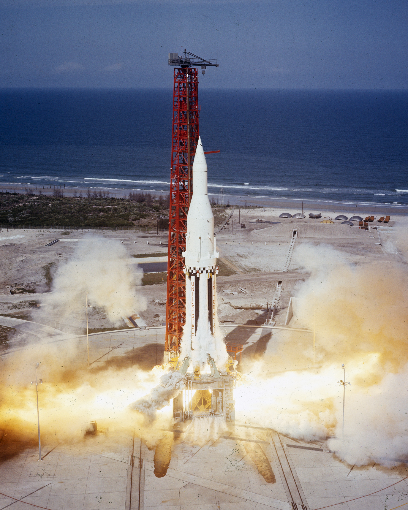

Apollo 4 was the first flight of the Saturn V rocket and the first mission of the Apollo program to launch after the Apollo 1 tragedy. Conducted on November 9, 1967, the mission was uncrewed and focused on testing the performance of the Saturn V launch vehicle and the Apollo Command and Service Module under actual flight conditions.
NASA considered Apollo 4 one of the most important missions in the Apollo program. Before astronauts could be sent to the Moon, engineers needed to prove that the massive Saturn V rocket could safely launch a spacecraft into space and return it to Earth. The mission would provide valuable information about the rocket's engines, navigation systems, and the spacecraft's ability to survive the intense heat of reentry.
The primary goal of Apollo 4 was to test the Saturn V rocket during a complete flight. Engineers wanted to verify that all three stages of the rocket could function properly and deliver the spacecraft into the correct orbit.
Another important objective was to test the Command Module's heat shield. Since future lunar missions would return to Earth at much higher speeds than previous spacecrafts, NASA needed to know that the heat shild could withstand temperatures approaching 5,000 degrees Fahrenheit during reentry.
Apollo 4 lifted off from Launch Complex 39A at Kennedy Space Center. The launch marked the first flight of the largest and most powerful rocket ever built. Spectators and NASA officials watched as the Saturn V successfully rose from the launch pad and headed toward space.
All three stages of the rocket performed successfully. After reaching Earth orbit, the spacecraft restarted its engine to simulate the conditions that would occur during a return from the Moon. This maneuver allowed engineers to test whether the spacecraft could safely handle extreme speeds required for lunar missions.
The mission successfully demonstrated the capabilities of the Saturn V rocket. Engineers confirmed that the launch vehicle could carry heavy payloads into space and that its guidance systems performed as expected.
The Command Module's heat shield also passed its test. When the spacecraft reentered Earth's atmosphere, it experienced temperatures similar to those expected during a lunar return. The heat shield protected the spacecraft successfully, proving that astronauts could safely return from future Moon missions.
Apollo 4 was a major success for NASA and restored confidence in the Apollo program after the Apollo 1 accident. The mission demonstrated that the Saturn V rocket was capable of supporting lunar exploration and provided crucial data for future missions.
Many historians consider Apollo 4 as one of the most important test flights in the history of space exploration because it proved that the hardware needed for a Moon landing was beginning to work as intented.